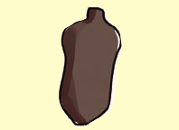
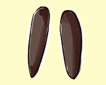
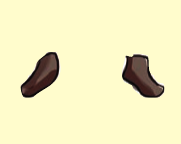
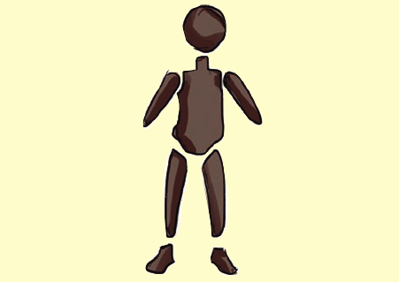
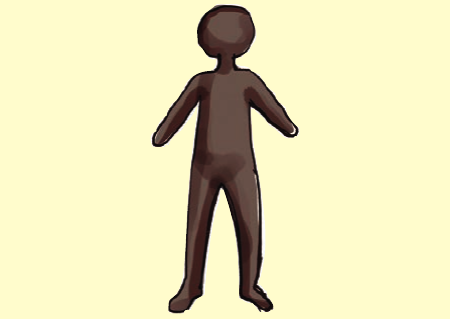

Anza kufinyanga umbo la mtu kwa kuandaa udongo. Tumia mikono kutengeneza maumbo ya kichwa, kiwiliwili, mikono, miguu na nyayo.
Hatua za kufinyanga umbo la mtu
1. kichwaUdongo umefinyangwa kuwa umbo la duara kwa ajili ya kichwa.

2. kiwiliwiliUdongo umefinyangwa kuwa umbo refu kwa ajili ya kiwiliwili.3. mikonoVipande viwili vyembamba vya udongo vimefinyangwa kwa ajili ya mikono.

4. miguuVipande viwili virefu vya udongo vimefinyangwa kwa ajili ya miguu.

5. nyayoVipande viwili vidogo vya udongo vimefinyangwa kwa ajili ya nyayo.

6. Unganisha maumbo haya kulingana na umbo la mtuMaumbo ya kichwa, kiwiliwili, mikono, miguu na nyayo yamepangwa ili kuunganishwa kulingana na umbo la mtu.

7. Umbo la mtu lipo tayariUmbo la mtu lililokamilika limesimama baada ya maumbo yote kuunganishwa.